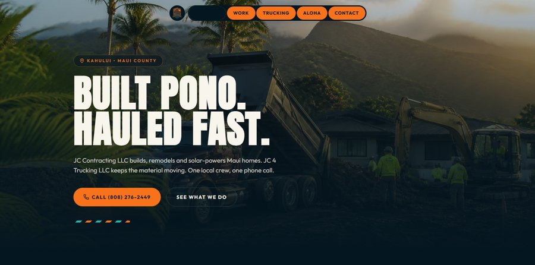
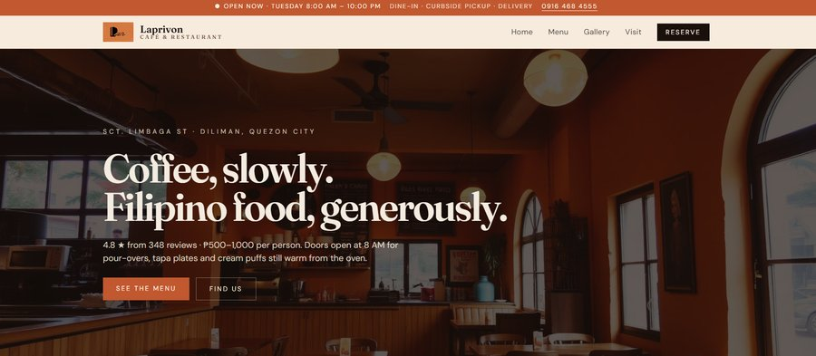
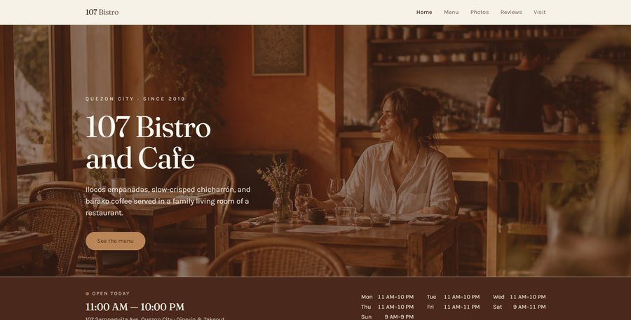
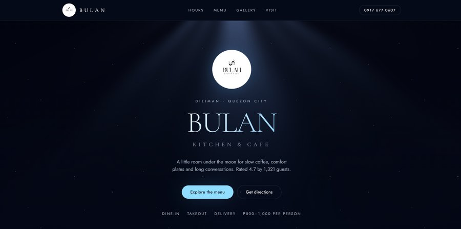
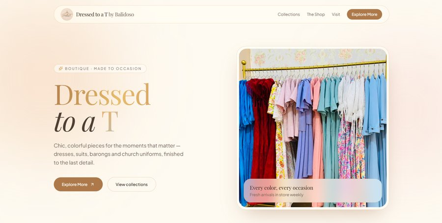
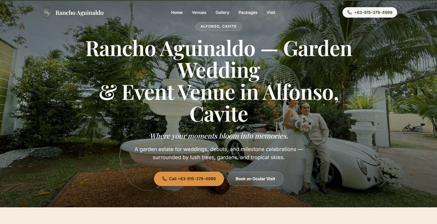

$run test-suite --target=career
›initializing profile... done
›status: 3 years experience, 0 known blockers
Software Testing Intern and BS Computer Science student who builds full-stack applications, then breaks them on purpose — hunting down the bugs before your users do.
01 · About
I'm a third-year Computer Science student at New Era University, currently interning as a Software Testing Intern at BlueShirt Philippines. My days are split between two habits that feed each other: shipping features as a full-stack developer, and picking them apart as a tester — writing reproduction steps, flagging severity, and pushing fixes back to the team before release.
Outside the codebase, I've spent a lot of time behind a production desk and a microphone — running the Production Committee and shoutcasting for NEU Project Paradigm, and organizing events for the Association of Computer Science Students. That mix shows up in how I work: I care about the small details that make something feel finished, whether that's a clean UI, a clear bug report, or a well-run event.
02 · Experience
Where I've been putting software through its paces.
June 2026 — Present · Quezon City, Metro Manila
03 · Projects
Full-stack builds, tested and deployed by me.
04 · Web Design
Websites I've designed and built for cafés, boutiques, and events venues on the side.

Site for a Maui construction and trucking company — full-bleed job-site hero, service breakdown, and a direct call-to-book CTA.
View demo ↗
Full homepage design for a café and restaurant — hero photography, hours bar, menu and reservation flow.
View demo ↗
Warm, editorial-style homepage concept with a full hours and location bar built into the fold.
View demo ↗
Moody, late-night café concept — spotlight hero, soft blue accent, and a quiet, minimal nav.

Product-forward homepage for a made-to-occasion boutique — dresses, suits, barongs, and church uniforms.
View demo ↗
Marketing site for a garden wedding and events venue — full-bleed hero, packages, and a direct booking CTA.
View demo ↗05 · Skills
What I build and test with.
06 · Certifications
Coursework and credentials completed alongside my degree.
07 · Leadership
Where I lead, organize, and occasionally grab the mic.
Values Infusion Committee Secretary · Sports & Technical Committee Member
Production Committee Head · Shoutcaster
08 · Contact
Open to internships, freelance work, and anyone who needs a second pair of eyes on a release.